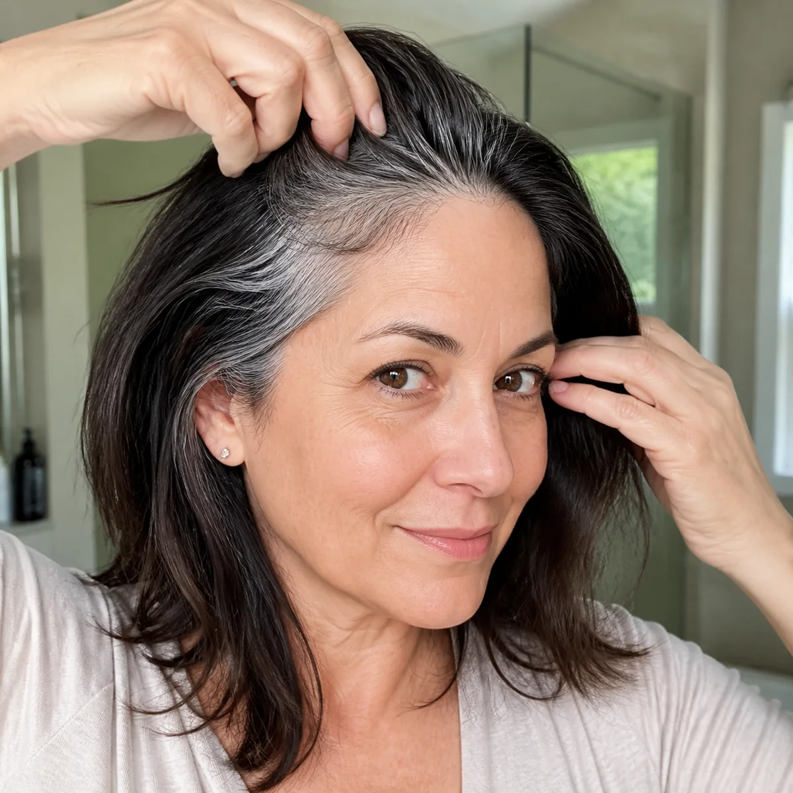
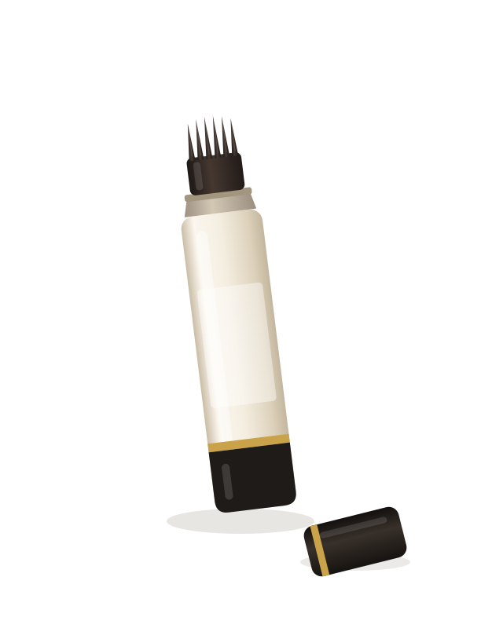

HAIR
The Hidden Chemicals Inside Salon Dye That Are Quietly Breaking Your Hair Off
Two of them. Both legal. Both in almost every permanent color. And one of them is the exact same chemical your body makes when it turns your hair gray in the first place.

If you’re a woman over 40, you’ve probably already found your first grays. And nobody enjoys that morning. So you do the sensible thing — you book the salon. Of course you do. It’s the best result, it’s the most natural, it’s the safest, and it’s what everyone does.
That’s what most of us believed. Then in 2009, a team of researchers published something in The FASEB Journal that quietly changed the conversation. They took human hair follicles and found that gray hair isn’t really “turning” gray at all. It’s bleaching itself. From the inside.
The editor of the journal put it about as plainly as a scientist ever will: all of our hair cells make a tiny bit of hydrogen peroxide, and as we get older, that tiny bit becomes a lot. We bleach our own pigment from within.
Now hold that word. Hydrogen peroxide. You’re going to see it again in about ninety seconds, and it’s going to bother you.
The cycle nobody warns you about
You walk out of that first appointment and you look incredible. Two weeks go by. You catch your part line in the bathroom mirror and there’s a thin silver line sitting there. You tell yourself it’s the lighting. Week three, it isn’t the lighting.
So you book again. And this time you notice you booked sooner than last time. And the time after that, sooner again. Six weeks became five. Five became four. Now you’re looking at the calendar wondering how it became a monthly bill.
Most women assume this is just aging speeding up. A coincidence. Bad luck. It isn’t a coincidence. There’s a reason the gap keeps shrinking, and it has nothing to do with your age and everything to do with what’s sitting in that bowl.
Villain one: hydrogen peroxide
Permanent color can’t work without it. Hydrogen peroxide is the developer. Its job is to strip out the pigment already in your hair so the new color has somewhere to sit. No peroxide, no lasting color. That’s just chemistry.
Now go back to that 2009 study. Researchers found that gray and white hair shafts had built up hydrogen peroxide in millimolar concentrations — a lot, in plain English. And the enzyme that’s supposed to clear it out, catalase, was almost completely gone.
Your hair goes gray because hydrogen peroxide builds up in the follicle and destroys your pigment. And then, to cover the gray, you sit in a chair for forty-five minutes with more hydrogen peroxide on your head.
Research published in The FASEB Journal, 2009. Verify and cite the paper properly before publishing.
Nobody is saying the bottle on the shelf and the peroxide in your follicle are doing the identical job. They aren’t. But it is the same compound, and researchers are clear that repeated peroxide exposure weakens the hair shaft and adds to the oxidative stress on your scalp. You are treating a peroxide problem with peroxide.
And honestly, it isn’t even the one doing the most damage to how your hair actually feels.
Villain two: ammonia
Your hair has a protective outer layer called the cuticle. Think of roof tiles lying flat over each other — that’s what keeps moisture in and keeps your hair smooth and shiny. Ammonia’s job is to pry those tiles open so the color can get underneath.
Every single time you do it, those tiles get lifted. Do it once, your hair recovers. Do it every four weeks for a few years and the cuticle stops closing properly. Moisture escapes. Hair goes dry, rough, porous, brittle. Then it snaps.
And this is the part women get wrong about themselves. You look in the mirror and see less hair, and you think I’m losing my hair. Usually you aren’t. Your follicles are fine and still working. Your strands are breaking off partway down, which makes your hair look thinner, flatter and shorter around the face.
None of this means never color your hair again. Ammonia in your hair four times a year is fine. Ammonia in your hair fourteen times a year is a different conversation. Your scalp is skin, and skin needs recovery time between anything harsh.
So what are you actually supposed to do?
This is the trap, and it’s worth naming out loud.
That leaves you with five or six weeks a year — every year — where the “correct” choice is to just walk around with a silver stripe down your part and be fine with it.
And let’s be honest about what that actually feels like. It’s the 9am video call where you spend the whole meeting tilting your head, watching your own square in the corner instead of listening. It’s the wedding photos you already know you’re going to scroll past. It’s not vanity. It’s the feeling of not looking like yourself.
You shouldn’t have to pick between wrecking your hair and feeling invisible for six weeks a year. And you don’t. Because that in-between gap is a solved problem — just not here.
What Korean women have been doing instead
In Korea, covering your roots isn’t a whole event. There’s no bowl, no gloves, no developer, no sitting in foils hoping it doesn’t come out brassy. There’s a stick. It looks like a chunky lip crayon with fine comb teeth at the tip. You twist it up, swipe it along your part line and your temples, and the gray is gone. It takes about ten seconds and one hand.

The comb teeth are the whole idea. Instead of spraying color everywhere and hoping, the teeth carry the pigment down the hair you can actually see, and glide past your scalp instead of soaking it. Nothing gets developed. Nothing gets opened up. There’s no peroxide and no ammonia in the equation at all, because it isn’t dye.
It’s makeup for your hair. That’s genuinely the easiest way to think about it — the same way concealer sits on your skin and comes off at night.
This is why it fits in the gap. It’s cosmetic, so it isn’t part of your 8-to-10 week budget. Your hair gets its recovery time and you still get to look like yourself on a Tuesday. Celurelle is that stick, made for Western hair colors:
- Ten seconds, one hand. Car, work bathroom, anywhere with a mirror.
- Holds 20+ hours. Micropigment powder that stays off your collar and your pillow.
- Blends into your real color. Not the flat sprayed-on look everyone can spot.
- Washes out with normal shampoo. Zero commitment, zero grow-out line.
It won’t color your hair. That’s the point. It covers what shows, today, and leaves the biology under it alone.

I stretched my salon visits from every four weeks to every ten. My hair stopped snapping off around my face and nobody noticed anything except that it looks thicker.
My temples are always the first to show. Ten seconds before a video call and I stop staring at my own square in the corner.
Pick your shade in daylight, not bathroom light
On the next page you’ll hold the swatch up against your part and choose your match. It ships as one stick and it lasts months, because you’re only ever covering an inch.
€39.95€27.95
30-day guarantee · secure checkout · replace with your real terms
Questions
Is this hair dye?
No. It’s a cosmetic root-coverage product. The pigment sits on the outside of the strand the way concealer sits on your skin, and it washes out with normal shampoo.
Can I still get my color done at the salon?
Yes. That’s the point. It’s cosmetic, so it isn’t part of the recovery window colorists recommend between permanent color sessions. It covers the in-between weeks.
Which shade should I choose?
Hold the swatch up against your part in daylight, not bathroom light. When you’re between two shades, most people prefer starting with the lighter one.
How long does one stick last?
Months for most people, because you’re only ever covering an inch along the part and temples. Replace this with your own average from customer data.
P.S. — If you get your color done twice a year and your hair feels great, honestly, you don’t need this. This is for the women who are back in that chair every three or four weeks and have started noticing short broken pieces sticking up along their part. That’s the sign your hair is asking for a break, and this is how you give it one without giving up how you look.
Advertorial disclosure: This is a reusable promotional template. Replace all sample claims, statistics, study references, dates, prices and guarantee terms with accurate, substantiated information before publishing. This article is for general information and isn’t medical advice. A cosmetic root-coverage product covers the appearance of grays and washes out — it doesn’t treat, prevent or reverse graying or hair loss.